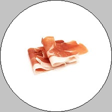
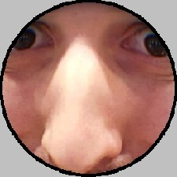

qui_info_très_très_très_vrai.com

IsTaken
@bueufsh
follow me bg
Ce site est de base un délire créé en été 2018 par Alexis T. et Antonin Q. C'est un faux site de news contenant des articles complétement débiles.
Je suis Antonin Q. et j'ai créé le site (pas si ouf) de A à Z (même les graphisme Paint incroyable) sans aucune aide extérieure

Alexis
@tgmollyx
C'est lui qui a trouvé l'idée de base en 2018 mais il a pas de ouf aidé pour le site (sauf pour trouvé des idées pour les fonds un peu)
Faut aller le follow il en a besoin en plus il est drôle un peu quand il veut